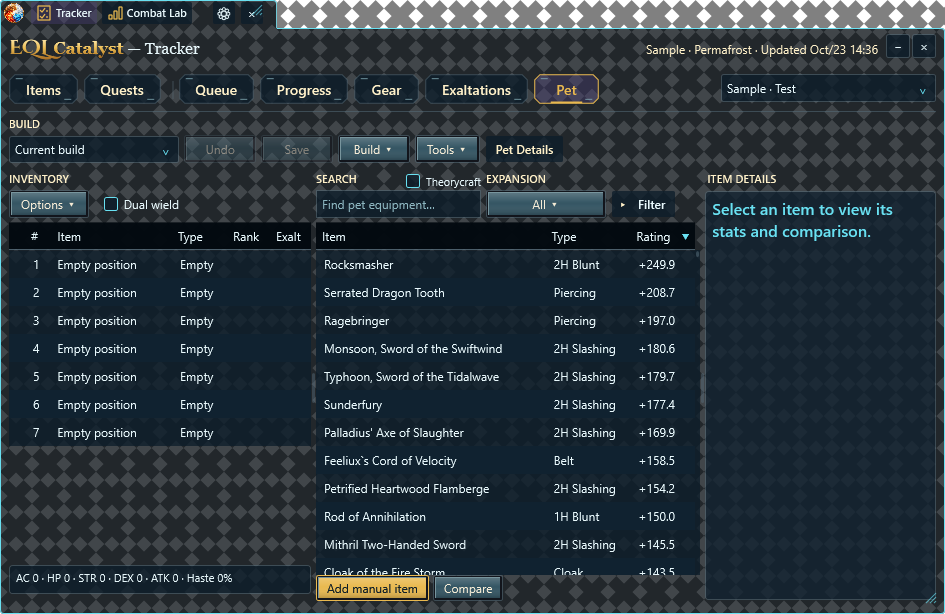
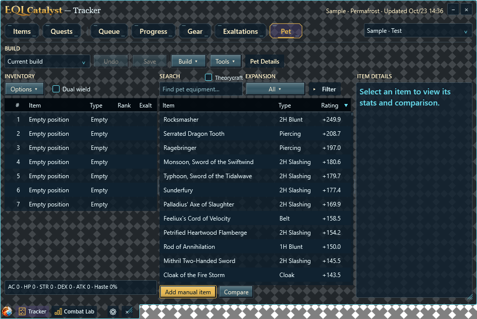
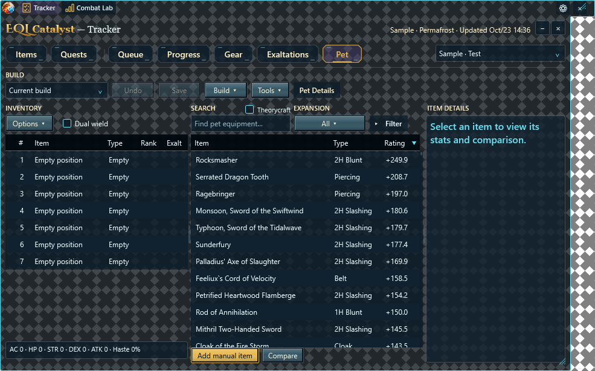

Translucent workspace & pet art round two
The bar uses the workspace’s translucent theme surface at its own saved width. Dark flat buttons remain opaque; the attached native panel shares one outer outline with the bar. The branded title starts 6 DIP below its native edge.
✦
EQL Catalyst — Tracker
Translucent theme surface · saved workspace dimensions stay unchanged
Interactive presentation sketch. Actual native WPF component captures below are the implementation evidence. Opening: 120 ms ease-out and 4 DIP; closing: 90 ms inverse. Windows/app reduced-motion settings snap transitions.
Native joined-window captures: unequal widths, below and above
Panel below toolbar

Panel above toolbar

Toolbar wider than panel

Pet artwork
Monster A is in use. Only Monster production artwork changed. The 18 round-two alternatives remain review-only: 4 Monster, 4 Water, 4 Undead, 4 Fire and 2 lion Warders. Other production families and application/tray icons stay unchanged.
Sizes: 13, 14, 16, 20, 24, 32 and 64 DIP equivalents. Simplified SVG paths match native WPF vectors. Painted PNGs retain generated alpha. Detail uses displayed DIP size; native bitmap decoding uses monitor DPI. Shortlisting here is a review aid; it does not change the running app.
No additional concept shortlisted.
Archived earlier concepts
Actual DPS selector controls
These boards insert candidate artwork into the real WPF DPS selector template at every requested size. Select a family and theme above; all families remain available in the archived section. Clean/Vibrant preferences and the two independent selectors are preserved.
Monster controls


Native grayscale and silhouette study


Prompts and provenance hashes · Help · Validation findings · Previous round